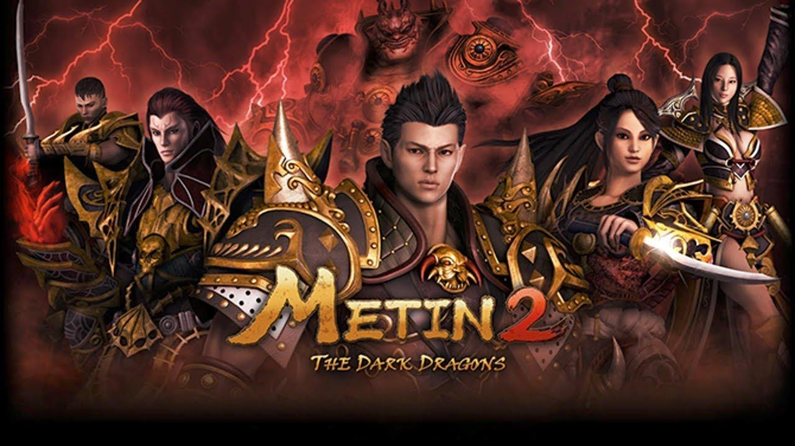

Videojogos sempre fizeram parte da minha vida, desde muito pequeno que jogo , o jogo que marcou a minha infancia foi sem duvida o metin2 um mmorpg que passei muitas horas a jogar, mais recentemente foi o the last of us o qual completei e joguei cerca de 6 vezes quer o primeiro quer o segundo.
